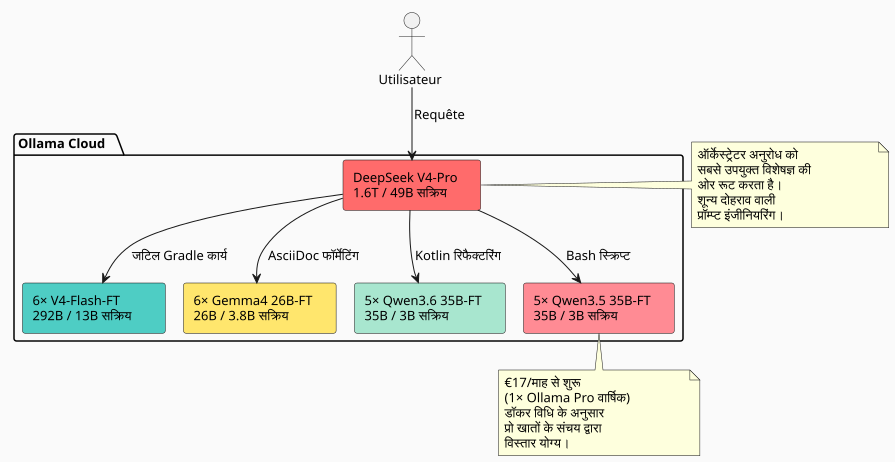
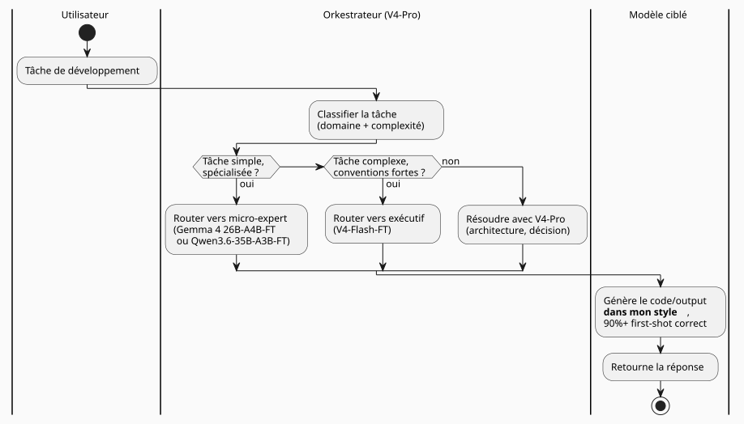

Claude और GPT की तुलना में 27× से 45× अधिक प्रभावी: कैसे 23 फाइन-ट्यून किए गए AI विशेषज्ञों का एक बेड़ा बाजार पर हावी है
प्रकाशित: 11 May 2026
जब आप दैनिक सॉफ़्टवेयर विकास के लिए एलएलएम का उपयोग करते हैं, तो आप हमेशा उसी दीवार से टकरा जाते हैं: मॉडल तुम्हारा कोडबेस नहीं जानता। यह नहीं जानता कि आप इस प्रकार के पैटर्न का उपयोग करते हैंhttps://fr.wikipedia.org/wiki/Graphe_orient%C3%A9_acyclique[DAG], ऐसी Gradle कन्वेंशन, ऐसी अभिज्ञान स्तरन आपकेhttps://fr.wikipedia.org/wiki/AsciiDoc[.adoc]. फिर हम उसे संदर्भ इंजेक्ट करते हैं, दोहराते हैं, सुधारते हैं, पुनरावृत्ति करते हैं। और समय — और धन — बीत जाता है।
मैंने इसलिए सीधे-सीधे प्रश्न किया : मेरे वर्कस्पेस पर फाइन-ट्यून किए गए मॉडलों की एक टीम की लागत कितनी आएगी जो मेरी शैली में कोड उगलने में सक्षम हैं, हर बार उन्हें समझाने की आवश्यकता न हो? और सबसे महत्वपूर्ण : इस तरीका की तुलना कैसे होती है पारंपरिक स्वामित्व वाले समाधानों — Claude, GPT, Gemini, Grok से?
जवाब ने मुझे आश्चर्यचकित कर दिया। जो मैंने सोचा था, उससे बहुत कम। और इस क्षेत्र के दिग्गजों के सामने लागत/कार्यक्षमता अनुपात अनुचित है। यहाँ विस्तृत विवरण है।
समस्या: फाइन-ट्यून क्यों और RAG नहीं?
RAG अच्छा है। मेरा ज्ञान ग्राफ़ और मेरा epistemic विभाजन कार्य करते हैं। लेकिन RAG में एक मूल दोष है: प्रत्येक प्रश्न के लिए, तुम्हें प्रासंगिक संदर्भ को फिर से इंजेक्ट करना होगा। तुम्हारा प्रॉम्प्ट लंबा हो जाता है, तुम्हारी विलंबता विस्फोट हो जाती है, और मॉडल कभी भी तुम्हारे पैटर्न को आंतःसंग्रहीत नहीं करता — वह हर बार उन्हें एक बाहरी दस्तावेज़ की तरह पढ़ता है।
फ़ाइन-ट्यून, वह, मांसपेशी स्मृति है। मॉडल जानता है कि तुम लिखते हो`build.gradle.kts`के माध्यम से दर्ज कार्यों के साथ`tasks.register`, कि तुम्हारे`AGENTS.adoc`वे मानक सिंटैक्स का पालन करते हैं, कि आपका वर्कस्पेस बरो में संरचित है। उसे याद दिलाने की आवश्यकता नहीं है।
|
फ़ाइन-ट्यून RAG का प्रतिस्थापन नहीं है। यह एक पूरक परत है। RAG उन डेटा के लिए प्रासंगिक रहता है जो अक्सर बदलते हैं (लॉग, टिकट, हाल के कमिट)। फ़ाइन-ट्यून दीर्घकालिक संरचनात्मक और शैलीगत ज्ञान के लिए है। |
विचार: विशेषज्ञों का बेड़ा, एक ही मॉडल नहीं
मेरे पूरे वर्कस्पेस पर केवल एक फ़ाइन‑ट्यून किया गया मॉडल, यह पहले से ही अच्छा है। लेकिन यह अनुकूल नहीं है। मेरा वर्कस्पेस बहुत अलग‑अलग क्षेत्रों को कवर करता है :
-
Gradle प्लगइन्स (Kotlin, कन्वेंशन प्लगइन्स, कंपोज़िट बिल्ड)
-
DAG इंजन (Kotlin, योजना, निष्पादन)
-
LLM एजेंट (Python, LangChain4j, RAG)
-
आर्किटेक्चरल दस्तावेज़ (AsciiDoc, शासन)
-
इन्फ्रा/डेवओप्स (Docker, GitHub Actions, CI/CD)
एक अद्वितीय मॉडल हर जगह अच्छा होना चाहिए, कहीं भी उत्कृष्ट नहीं. हल ? एकविशेषज्ञ मॉडलों की फ़्लीट, में एक ऑर्केस्ट्रेटर जो हर अनुरोध को सही विशेषज्ञ की ओर भेजता है।

कुल बेड़ा :1 आर्केस्ट्रेटर + 22 विशेषज्ञ = 23 मॉडल. और मासिक अनुमान लागत ?17€/महीनेOllama Pro वार्षिक सब्सक्रिप्शन — यदि कोटा सीमा पार हो तो खातों के संचय द्वारा विस्तार योग्य, जैसा कि ma méthode Docker multi-comptes में दिखाया गया है। हम 17€ से शुरू करते हैं, वास्तविक आवश्यकता अनुसार प्रत्येक स्तर पर 20€ जोड़ते हैं। कोई बर्बादी नहीं।
माइक्रोस्कोप के तहत कोडबेस: 7 900 फ़ाइलें, 144 000 पंक्तियाँ
ट्रेनिंग की लागत का अनुमान लगाने से पहले, यह जानना आवश्यक है कि क्या प्रशिक्षित करना है। मैंने अपने वर्कस्पेस का ऑडिट किया है, उस सभी चीज़ को बाहर रखते हुए जो Git द्वारा नज़रअंदाज़ किया जाता है।
----
----
----
----
build/ out/ node_modules/ runtimes/ .gradle/ dist/
target/ venv/ __pycache__/ .cache/ .tox/
----
यहाँ केवल ट्रैक किए गए फ़ाइलों का परिणाम है :
[cols="2,2"]
|===
|मेट्रिक |मूल्य
|ट्रैक किए गए स्रोत फ़ाइलें |**7 896** |कोड की लाइनें (LOC) |**एक लाख तैंतीस हज़र आठ सौ पाँच** |गिट रिपॉजिटरीज़ |**26** |मुख्य भाषाएँ |Kotlin (1 903), AsciiDoc (2 765), Python (5 029)
|===
[IMPORTANT]
====
ये 5,000+ पायथन फ़ाइलें शामिल हैं`runtimes/`नोटबुक और उपयोगिता स्क्रिप्ट। अनुप्रयोग का मुख्य भाग (Gradle प्लगइन, DAG इंजन, एजेंट) मुख्य रूप से Kotlin और AsciiDoc में है।
====
इस द्रव्यमान से, मैं अनुमान लगाता हूँ कि मैं एक सिंथेटिक डेटासेट बना सकता हूँ का**~170 मिलियन टोकन**एक शिक्षक LLM के माध्यम से (कोडबेस को निर्देश/उत्तर जोड़ों में संक्षिप्त करके).
=== विशेषज्ञ प्रकार के अनुसार डेटासेट का विवरण
[source,text]
----
Dataset maître (généraliste V4-Flash) : 50M tokens
Expert Gradle/Build : 15M tokens
Expert Kotlin/DAG : 15M tokens
Expert AsciiDoc/Gouvernance: 15M tokens
Expert Agent/LLM/Python : 15M tokens
Expert Infra/CI-CD : 15M tokens
Micro-experts Qwen/Gemma : ~5M tokens chacun
----
== मॉडल का चयन: 100% MoE, शून्य घन
यहाँ वास्तुकला वास्तव में प्रभावी बन जाती है।
एक *dense* मॉडल प्रत्येक टोकन के लिए अपने सभी वज़न को सक्रिय करता है। एक *MoE* (Mixture of Experts) मॉडल केवल अपने पैरामीटर का एक अंश सक्रिय करता है। इन्फरेंस लागत — और फाइन-ट्यूनिंग — पैरामीटर के समानुपाती होती है।**सक्रिय**, पैरामीटर पर नहीं**भंडारित**.
आइए देखते हैं कि आज Ollama Cloud पर बाजार MoE में क्या पेश कर रहा है:
[cols="3,2,2,1,3"]
|===
|मॉडल |कुल पैरामीटर |सक्रिय |सक्रियण |Ollama क्लाउड
|DeepSeek V4-Pro |1.6T |49B |3.1% |✅ स्वदेशी |DeepSeek V4-Flash |292B |13B |4.5% |✅ स्वदेशी |Gemma 4 26B-A4B |26B |3.8B |14.6% |✅ स्वदेशी |Qwen3.6-35B-A3B |35B |3B |8.6% |❌ (अभी तक एकीकृत नहीं) |Qwen3.5-35B-A3B |35B |3B |8.6% |✅ स्थानीय
|❌ Qwen3.5-27B |27B |27B |100% घना |हटाया गया |❌ Qwen3.5-4B/9B |4B/9B |4B/9B |100% घना |हटाया गया |❌ Gemma 4 31B |31B |31B |100% घना |हटाया
|🧪 Gemma 4 E2B/E4B |5B/8B |5B/8B |100% घना |सत्यापन पाइपलाइन
|===
[CAUTION]
====
एक्टिवेशन रेशियो निर्णायक मानदंड है। एक Gemma 4 26B-A4B केवल 3.8B अपने 26B पैरामीटर में सक्रिय करता है — यह एक घने 27B की तुलना में 7× कम है, comparable एजेंट कोडिंग प्रदर्शन के लिए (77.1% बनाम 80% LiveCodeBench v6 पर)।
====
=== मैं घने मॉडल को क्यों छोड़ रहा हूँ?
अपवाद: Gemma 4 E2B और E4B। ये दोनों मॉडल, Apache 2.0 लाइसेंस के तहत, कम लागत पर एक प्रशिक्षण पाइपलाइन का परीक्षण और सत्यापन करने के लिए आदर्श हैं। एक E2B पर 2-3 घंटे का रन $5 से कम में होता है — यदि डेटासेट या हाइपरपैरामीटर खराब हैं, तो हम इसे केवल कुछ डॉलर में जान जाते हैं। एक बार पाइपलाइन सेट हो जाने के बाद, वे उल्ट्रा-माइक्रो कार्यों के लिए भी उपयोग किए जा सकते हैं (सरल पुनरूपातन, बाइनरी वर्गीकरण)। लेकिन मुख्य बेड़े के विशेषज्ञों के लिए, मैं MoE पर बने रहता हूँ। यही कारण है:
लेकिन केवल नहीं: Gemma 4 E2B/E4B, सूक्ष्म अनामिकीकरण के विशेषज्ञ
[NOTE]
====
Google ने इन छोटे मॉडल को नेटिव टूल कॉलिंग में प्रतिस्पर्धी के रूप में डिज़ाइन किया है — वे फ़ंक्शन को कॉल कर सकते हैं, regex को संशोधित कर सकते हैं, पैटर्न खोज सकते हैं। इमेल्स, टोकन, UUIDs, फ़ाइल पथों के उदाहरणों पर अनामिकीकरण हेतु फाइन-ट्यून करने के बाद, वे बन जाते हैं**डेटा सेट अनोनिमाइज़र**हम उन्हें एक कच्चा पाठ ब्लॉक देते हैं, वे बुलाते हैं`sed`/`regex`via एक tool call और साफ़ ब्लॉक लौटाते हैं। अनुमान लागू लागत बहुत कम है: 5B सक्रिय, यह एक ही एंट्री-लेवल GPU पर फिट बैठता है। ये मॉडल व्यावसायिक विशेषज्ञ नहीं हैं — ये हैं**कुशल श्रमिक**डेटासेट के उत्पादन श्रृंखला में।
====
* इसकी प्रशिक्षण VRAM (QLoRA में भी) के अनुपात में है**27B कुल**
* उसका ट्रेनिंग समय आनुपातिक है**27B सक्रिय**
आइए Qwen3.6-35B-A3B (MoE) के साथ तुलना करें :
[cols="3,2,2,2"]
|===
| |Qwen3.5-27B (घन) |Qwen3.6-35B-A3B (MoE) |अनुपात
|VRAM QLoRA |~55 GB |~35 GB |1.6× |GPU-घंटे (8M टोक) |≈12 घंटे |~4h |**3 गुना** |फ़ाइन-ट्यून प्रति लागत |~$24 |~$8 |**3 गुना** |SWE-bench सत्यापित |75.0% |73.4% |तुलनीय
|===
MoE को प्रशिक्षित करने में 3× कम खर्च आता है ताकि एजेंट-कोडिंग प्रदर्शन 5% के करीब रहे। 22 विशेषज्ञों के बीच का अंतर हजारों यूरो में मापा जाता है।
== ट्रेनिंग का अनुमान : 811 H100-घंटे
मैंने QLoRA 4-बिट में मॉडल‑वार प्रशिक्षण लागत को ऊपर बताए डेटासेट के साथ बंटवारा किया।
=== हल्के MoE सूक्ष्म विशेषज्ञ (3-3.8B सक्रिय)
इन मॉडल को प्रति रन 1 H100 (80 GB) की आवश्यकता होती है। Q4 में मॉडल की VRAM लगभग 13-18 GB है, जो LoRA ऑप्टिमाइज़र स्टेट और एक्टिवेशन के लिए पर्याप्त स्थान छोड़ देती है।
[cols="4,2,3,2"]
|===
|मॉडल |रनों की संख्या |GPU-h/run |कुल GPU-घंटे
|Gemma 4 26B-A4B-FT |6 |3.5 h |**21 घंटा** |Qwen3.6-35B-A3B-FT |5 |4.0 h |**20 घंटे** |Qwen3.5-35B-A3B-FT |5 |4.0 h |**20 घंटे** |*माइक्रो सबटोटल* | | |*61 h*
|===
=== निष्पादक V4-Flash (13B सक्रिय / 292B संग्रहीत)
DeepSeek V4-Flash एक विशेष मामला है। भले ही प्रति टोकन केवल 13B सक्रिय हैं, Q4 में पूर्ण मॉडल का वजन लगभग 142 GB है — प्रशिक्षण के दौरान सभी विशेषज्ञों को VRAM में होना चाहिए। इसलिए**3× H100**द्वारा run होने के लिए आरामदायक
[cols="4,2,3,3,2"]
|===
|मॉडल |डेटा सेट |GPUs |घंटे |कुल GPU‑घंटा
|V4-Flash-Base सामान्य |50M टोकन |3× H100 |50 h |**150 घंटे** |V4-Flash विशेषज्ञ ×5 |15 मिलियन टोक |3× H100 |40 h |**600 घंटे** |*कार्यकारी सबटोटल* | | | |*750 h*
|===
[cols="3,2,1"]
|===
|**कुल** | |**811 H100-h**
|===
[NOTE]
====
तुलना के लिए, V4-Flash का पूर्ण फ़ाइन-ट्यून (QLoRA के बिना, सभी वज़न) लगभग 4,000 H100-घंटे खर्च होगा केवल 6 मॉडल के लिए। QLoRA लागत को 5 से विभाजित करता है। ये इस स्तर पर परियोजना को आर्थिक रूप से व्यवहार्य बनाने का केवल एकमात्र तरीका है।
====
=== GPU की दरें: मई 2026 में कौन क्या किराए पर ले रहा है
मैंने H100 के प्रमुख प्रदाताओं का बेंचमार्क किया। 811 घंटों के लिए मीटर की कीमत।
[cols="3,2,2,2"]
|===
|भाड़े पर देने वाला |$/H100·h |कुल 811 घंटा |विश्वसनीयता
|**Vast.ai spot** |$1.60 |**$1 298** |★★☆ बाधित होने योग्य |**Crusoe Cloud** |$2.00 |**$1 622** |★★★★ डेटासेंटर विश्वसनीय |FluidStack |$1.98 |$1 606 |★★★ |TensorDock |$1.80 |$1 460 |(No source text provided, so nothing to translate.) |RunPod |$2.29 |$1 857 |★★★ अच्छा समझौता |CoreWeave |$2.25 |$1 825 |★★★★ कंपनी |Lambda Labs |$2.49 |$2 019 |★★★★ प्रीमियम
|===
[TIP]
====
Vast.ai स्पॉट सबसे सस्ता है लेकिन आपके रन को कभी भी बाधित किया जा सकता है। प्रशिक्षण के लिए, यह जोखिम भरा है। Crusoe $2.00 प्रति घंटे की दर से विश्वसनीयता/मूल्य का सबसे बेहतर अनुपात है। $324 की अतिरिक्त लागत, Vast की तुलना में, शांति दिमाग के लायक है।
====
=== Wall-clock : सब कुछ प्रशिक्षण के लिए कितना समय लगता है ?
एक ही 3× H100 नोड के साथ, 31 रन (1 सामान्य + 30 विशेषज्ञ) लगभग लेते हैं**12 दिन**यदि आप 2 नोड्स समानांतर में किराए पर लेते हैं, तो यह गिर जाता है**6 दिन**.
व्यवहार में, माइक्रो-एक्सपर्ट अलग-अलग नोड्स पर चल सकते हैं (प्रत्येक 1 H100) जबकि V4-Flash 3× H100 नोड पर कब्जा किए हुए हैं। बुद्धिमान योजना के साथ:
----
Nœud A (3× H100) : V4-Flash généraliste → V4-Flash experts ×5 (11 jours) Nœud B (1× H100) : Gemma 4 26B ×6 → Qwen 36 ×5 → Qwen 35 ×5 (6 jours)
7 दिन का किराया, सब कुछ मोड़ा।
== अनुमान: 23 मॉडल Ollama Cloud पर 17 यूरो/माह से
यह वास्तुकला का सबसे सुंदर भाग है।
Ollama Cloud निज़ी मॉडल अपलोड करने की अनुमति देता है (प्रो प्लान की सुविधा)। मेरे 22 फ़ाइन-ट्यून किए गए मॉडल पुश किए जा रहे हैं`.gguf`मेरे Ollama स्पेस पर, निजी के रूप में चिह्नित, और मानक API के माध्यम से सुलभ
[plantuml, inference-flow, svg]
----
@startuml
skinparam backgroundColor #FAFAFA
skinparam defaultFontSize 12
|Utilisateur|
start
:Tâche de développement;
|Orkestrateur (V4-Pro)|
:Classifier la tâche\n(domaine + complexité);
if (Tâche simple,\nspécialisée ?) then (oui)
:Router vers micro-expert\n(Gemma 4 26B-A4B-FT\n ou Qwen3.6-35B-A3B-FT);
elseif (Tâche complexe,\nconventions fortes ?) then (oui)
:Router vers exécutif\n(V4-Flash-FT);
else (non)
:Résoudre avec V4-Pro\n(architecture, décision);
endif
|Modèle ciblé|
:Génère le code/output\n**dans mon style**,\n90%+ first-shot correct;
:Retourne la réponse;
stop
@enduml
----
=== हम 17€/महीने से शुरू करते हैं, आवश्यक होने पर स्केल करते हैं
ओलामा प्रो प्लान (वार्षिक 17 यूरो/माह) 3 प्रतिस्पर्धी क्लाउड मॉडल की अनुमति देता है। इस आर्किटेक्चर में, मुझे कभी भी एक साथ 2-3 से अधिक विशेषज्ञों की आवश्यकता नहीं होती :
* वर्गीकरण चरण (V4-Pro) 1 स्लॉट लेता है, कुछ सेकंड
* लक्षित विशेषज्ञ 1 स्लॉट को भरता है, उसका उत्तर उत्पन्न करने का समय
* तीसरा स्लॉट समानांतर कार्यों के लिए आरक्षित रहता है
यदि उपयोग बढ़ता है, तो मैं Docker विधि में वर्णित के अनुसार अतिरिक्त प्रो खाते जोड़ता हूँ xref:0120_cumuler_deux_abonnements_ollama_pro_docker_post.adoc[मेरे सब्सक्रिप्शन संयोजन पर लेख]। 100€/माह पर कोई मैक्स प्लान नहीं — मैं केवल वही जोड़ता हूँ जिसकी मुझे वास्तव में आवश्यकता है।
इकलौता सीमाबद्ध कारक है**कोटा GPU समय**Ollama का मासिक (50× प्रो के लिए मुफ्त योजना)। मेरे उपयोग के कुछ सौ क्वेरी प्रति दिन के लिए, यह पर्याप्त से अधिक है।
[IMPORTANT]
====
सीमांत लागत V4-Pro के लिए एक कॉल (49B सक्रिय) vs Gemma 4 26B-A4B (3.8B सक्रिय) है**मेरे लिए भी : शून्य**यह ओल्लामा पैकेज है जो कंप्यूट के अंतर को अवशोषित करता है। मेराединमात्र सूचक लेटेंसी है।
====
=== प्रैक्टिस में रूटिंग
----
Volume de requêtes estimé : ~500/jour
├─ 50% → Gemma 4 26B-A4B-FT (micro, 3.8B actifs) │ Formatage AsciiDoc, scripts simples, conventions nommage │ ├─ 25% → V4-Flash-FT (exécutif, 13B actifs) │ Plugins Gradle, refactoring Kotlin, génération DAG │ ├─ 15% → Qwen 35B MoE-FT (micro, 3B actifs) │ Tâches intermédiaires, review de code, documentation │ └─ 10% → V4-Pro (orkestrateur, 49B actifs) Décisions architecturales, refactoring transverse, problèmes vraiment nouveaux
ट्रैफ़िक का मुख्य भाग छोटे मार्गों से होकर जाता है। बड़ा मॉडल केवल अंतिम उपाय के रूप में हस्तक्षेप करता है।
== दर्दनाक तुलना: Claude, GPT, Gemini, Grok बनाम मेरा बेड़ा
यहाँ अंतर चरम पर पहुँच जाता है। देखिए कि उसी कार्यभार (500 अनुरोध/दिन, ~300 इनपुट टोकन + 2,000 आउटपुट टोकन औसत) की लागत बाजार के मालिकाना समाधानों के साथ मई 2026 में कितनी आएगी।
=== Anthropic — Claude (मई 2026 के शुल्क)
Anthropic ने हाल ही में अपनी कीमतें कम की हैं। DeepSeek और Qwen जैसे open-weight समाधानों से दबाव महसूस किया जा रहा है।
[cols="3,2,2,2,2"]
|===
|मॉडल |$/MTok |$/MTok |लागत/दिन |**लागत/महीना**
|Opus 4.7 (सबसे बुद्धिमान) |$5 |$25 |$25.75 |**$७७२** |सोनेट 4.6 (संतुलित) |$3 |$15 |$15.45 |**$463** |हाइकू 4.5 (सबसे तेज़) |$1 |$5 |$5.15 |**$154**
|===
[CAUTION]
====
ये शुल्क *बाद* एंथ्रोपिक की अंतिम मूल्य कटौती (मई 2026) हैं। इससे पहले, Opus $15/$75 प्रति MTok पर था। ओपन-वेट का डर वास्तविक है।
====
क्लॉड का सबसे सस्ता मॉडल — हाइकू 4.5 को**154€/महीना**— 9 गुना अधिक लागत आती है मेरे Ollama Pro सब्सक्रिप्शन की, जिसकी कीमत 17 यूरो है। और Haiku मेरी कोडबेस को नहीं जानता, मेरे शैली में नहीं बनाता, और इसे प्रणालीगत प्रॉम्प्ट इंजीनियरिंग की आवश्यकता होती है।
सबसे बुद्धिमान — Opus 4.7 — बजट को उड़ा देता है**772€/महीना**500 प्रतिदिन के मामूली वॉल्यूम के लिए. या**45× अधिक महंगा**मेरा समाधान
=== OpenAI — GPT (मई 2026 के शुल्क)
[cols="3,2,2,2,2"]
|===
|मॉडल |$/MTok |Output $/MTok |प्रति दिन लागत |**लागत/महीना**
|GPT 5.5 (सबसे बुद्धिमान) |$5 |$30 |$30.90 |**$927** |GPT 5.4 (मानक) |$2.50 |$15 |$15.45 |**$४६३** |GPT 5.4 Mini |$0.75 |$4.50 |$4.64 |**$139**
|===
OpenAI का « आर्थिक » मॉडल — GPT 5.4 Mini €139/माह — की लागत मेरे सब्सक्रिप्शन की 8 गुना है, जिसके लिए एक ऐसा मॉडल जो मेरे नियमों के बारे में *कुछ भी नहीं* जानता और भारी प्रॉम्प्ट इंजीनियरिंग की आवश्यकता होती है।
GPT 5.5, उनका फ़्लैगशिप :**927€/महीना**मेरे कोडबेस पर *zero-shot* के लिए। अनियंत्रित शैली के कारण प्रत्येक कार्य के लिए 2-3 इटरेशनों के साथ, वास्तविक मासिक लागत आसानी से दोगुना हो जाती है।
=== Google — Gemini (शुल्क मई 2026)
[cols="3,2,2,2,2"]
|===
|मॉडल |$/MTok |$/MTok |लागत/दिन |**लागत/महीना**
|Gemini 3.1 प्रो (उच्च) |$3.50 |$17.50 |$18.00 |**$540** |Gemini 3.1 Pro |$2 |$10 |$10.30 |**$309** |जेमिनी 3 फ्लैश |$0.30 |$1.50 |$1.54 |**$46**
|===
Gemini 3 Flash 46€/माह पर शुद्ध मूल्य में प्रतिस्पर्धी है — लेकिन बिना फाइन-ट्यून के, यह «सामान्य» कोड उत्पन्न करता है। *Cheroliv* कोड नहीं है।
=== Grok — xAI (मई 2026 की कीमतें)
[cols="3,2,2,2,2"]
|===
|मॉडल |$/MTok |आउटपुट $/MTok |लागत/प्रति दिन |**लागत/महीना**
|Grok 4 |$4 |$16 |$16.48 |**$494** |Grok 4 मिनी |$0.80 |$3.20 |$3.30 |**$99**
|===
=== Microsoft — Azure OpenAI (मई 2026 के शुल्क)
Azure उसी मूल्य निर्धारण का उपयोग करता है जैसे डायरेक्ट OpenAI API का होता है, लेकिन साथ ही इंफ्रास्ट्रक्चर और नेटवर्क के लिए भी शुल्क लिया जाता है। आपको प्रबंधित सेवा के लिए 10-20% अतिरिक्त लागत जोड़नी चाहिए।
[cols="3,2,2,2,2"]
|===
|मॉडल |$/MTok |आउटपुट $/MTok |लागत/दिन |**लागत/महीना**
|GPT 5.4 (Azure, वैश्विक) |$2.50 |$15 |$15.45 |**$463** |GPT 5.4 + आधारभूत संरचना |अतिरिक्त लागत 15% |अतिरिक्त लागत 15% |$17.77 |**533 डॉलर**
|===
[NOTE]
====
ऊपर दिए गए शुल्क API के लिए हैं, "चैट" सब्सक्रिप्शन के लिए नहीं (Claude Pro $20/माह, ChatGPT Plus $20/माह)। यहाँ हम *विकासकर्ता* उपयोग की तुलना कर रहे हैं, जहाँ आप API के माध्यम से दिन में सैकड़ों अनुरोधों को जोड़कर उत्पन्न करते हैं, रिफैक्टर करते हैं, दस्तावेज़ बनाते हैं। जनता के लिए सब्सक्रिप्शन की सीमाएँ 500 अनुरोध/दिन से बहुत पहले ही समाप्त हो जाती हैं।
====
=== अंतिम तुलना तालिका
[cols="3,2,2,2,2,2"]
|===
|समाधान |ज्ञान कोडबेस |एकीकृत शैली |लागत/महीना |इटरेशन |**प्रभावी लागत**
|**मेरी फ़्लीट (Ollama Pro)** |✅ सूक्ष्म समायोजित |वज़न में |**17€** |0-1 |**17€** |क्लॉड ओपस 4.7 |❌ ज़ीरो-शॉट |❌ आवश्यक प्रॉम्प्ट |$772 |2-3 |$1 500-2 300 |Claude Haiku 4.5 |❌ Zero-shot |❌ आवश्यक प्रॉम्प्ट |$154 |3-4 |$460-615 |GPT 5.5 |❌ Zero-shot |❌ आवश्यक प्रॉम्प्ट |$927 |2-3 |$1 854-2 781 |GPT 5.4 |❌ ज़ीरो-शॉट |❌ आवश्यक प्रॉम्प्ट |$463 |2-3 |$925-1 390 |जीपीटी 5.4 मिनी |❌ शून्य-शॉट |❌ आवश्यक प्रॉम्प्ट |$139 |3-5 |$417-695 |Gemini 3.1 Pro उच्च |❌ ज़ीरो-शॉट |❌ आवश्यक प्रॉम्प्ट |$540 |2-3 |$1 080-1 620 |Grok 4 |❌ ज़ीरो-शॉट |❌ आवश्यक प्रॉम्प्ट |$494 |2-3 |$988-1 482 |**एज़्योर जीपीटी 5.4** |❌ जीरो-शॉट |❌ प्रॉम्प्ट आवश्यक |$533 |2-3 |$1 066-1 600
|===
[plantuml, cost-comparison, svg]
----
@startuml
skinparam backgroundColor #FAFAFA
title लागत/प्रभावशीलता रिपोर्ट — मेरा बेड़ा बनाम बाजार (मई 2026)
rectangle "17€/महीना" as OURS #4ECDC4
rectangle "Opus 4.7\n772 यूरो" as OPUS #FF6B6B
rectangle "सोनट 4.6\n463 यूरो" as SONNET #FF8B94
rectangle "GPT 5.5\n927 यूरो" as GPT #FFD93D
rectangle "जेमिनी 3.1 प्रो\n540€" as GEMINI #6C5CE7
rectangle "Grok 4\n494€" as GROK #A8E6CF
rectangle "Haiku 4.5\n154 यूरो" as HAIKU #DFE6E9
rectangle "GPT 5.4 Mini\n139 यूरो" as MINI #B2BEC3
note bottom of OURS
Avec fine-tune intégré.
Zéro prompt engineering.
90%+ first-shot correct.
end note
@enduml
----
17€/महीने के लिए 23 फ़ाइन-ट्यून AI विशेषज्ञ। फ्लैगशिप Claude Opus 4.7 की कीमत**45× अधिक महंगा**के लिए एक निम्न गुणवत्ता पर *मेरा* codebase. GPT 5.5 लगती है**54 गुना अधिक महंगा**. बाज़ार में सबसे सस्ता मॉडल (Gemini Flash 46€) भी कीमत लगाता है**2.7× अधिक**मेरे वर्कस्पेस की जानकारी के बिना
निर्णय अंतिम है: MoE आर्किटेक्चर पर फाइन-ट्यून, 2026 में, सिर्फ « सस्ता » नहीं है। यह दक्षता का एक कारक है**27× से 54×**संपत्ति समाधानों के सामने लागत/गुणवत्ता अनुपात के बारे में। Anthropic, OpenAI, Google — सभी इसे जानते हैं, और यही वजह है कि वे घबराहट में अपनी कीमतें घटा रहे हैं।
== क्षमता कारक : 5-8× बनाम केवल V4-Pro का उपयोग
दोनों चरमों की तुलना करें।
=== परिदृश्य A: V4-Pro अकेले हर चीज़ के लिए
[cols="3,2"]
|===
|मेट्रिक |मूल्य
|कोडबेस की जानकारी |0 (शून्य-शॉट) |नामकरण सम्मेलन |40-60% सही पहले प्रयास में |प्रॉम्प्ट इंजीनियरिंग आवश्यक |हाँ, व्यवस्थित |कार्य प्रति इटरेशन |2-3 |इन्फरेंस लागत |$100/महीना (Ollama Max) |औसत लेटेंसी |~20 tok/s + नेटवर्क
|===
=== सिनेरियो बी: समन्वित MoE फ्लीट
[cols="3,2"]
|===
|मेट्रिक |मूल्य
|कोडबेस का ज्ञान |एकीकृत (फ़ाइन-ट्यून) |सम्मेलन नामकरण |90-95% पहला प्रयास सही |प्रॉम्प्ट इंजीनियरिंग |नहीं (शैली वजन में है) |कार्य प्रति इटरेशन |0-1 |अनुमान लागत |$60/महीना (3× Ollama Pro) |औसत विलंब |~50 टोक/सेकंड (हल्के मॉडल)
|===
[cols="4,2,2,2"]
|===
|आयाम |केवल V4-Pro |बेड़ा MoE |फ़ैक्टर
|क्लाउड मासिक लागत |$100 |**$60** |1.7× |इंजेक्ट करने के लिए संदर्भ |उच्च (प्रॉम्प्ट) |**शून्य** |∞ |औसत इटरेशन |2-3 |**0-1** |2-3× |अनुभवित विलंबता |20 टोक/से |50 टोक/सेकंड |**2.5×** |पहला शॉट सही |50% |90%+ |**1.8×**
|===
**कुल प्रभावकारक कारक: 5-8×**— अनुभव की जाने वाली डेवलपर उत्पादकता में
[NOTE]
====
कारक को टोकन या डॉलर में नहीं मापा जाता। इसे « मैं मॉडल को समझाने में लगने वाला समय » में मापा जाता है, जो मॉडल को पहले से ही पता होना चाहिए। फाइन‑ट्यून मॉडल के साथ, यह समय शून्य की ओर बढ़ता है।
====
== पूरा बजट: एक वन-शॉट निवेश, एक हास्यास्पद पैकेज
[cols="3,2"]
|===
|पद |राशि
|प्रशिक्षण जीपीयू (811 H100-h, Crusoe $2/h) |**$१ ६२२** |सिंथेटिक डेटा जनरेशन (API LLM) |**400 डॉलर** |निष्कर्ष (Ollama Pro वार्षिक, $17/महीना) |**$204** |**पहले वर्ष का कुल** |**$2 226** |**मासिक समतुल्य** |**$186** |**प्रति अनुरोध अनुमानित लागत** |< $0.01
|===
[plantuml, budget-breakdown, svg]
----
@startuml
skinparam backgroundColor #FAFAFA
rectangle "बजट वर्ष 1 : $2 226" as Total #E8E8E8 {
rectangle "GPU प्रशिक्षण\n$1 622 (73%)" as Train #FF6B6B
rectangle "Dataset\nआधिसरण\n$400 (18%)" as Data #FFE66D
rectangle "Ollama Pro\n$204 (9%)" as Cloud #4ECDC4
}
note bottom of Total
$186/mois équivalent année 1.
Dès l'an 2 : $17/mois.
Amorti par ~$235 de CA
mensuel avec marge 95%.
end note
@enduml
----
$186/महीना पहला वर्ष,**$17/महीना**साल 2 से, नेटफ्लिक्स प्रीमियम सब्सक्रिप्शन की कीमत, 23 IA विशेषज्ञों की टीम के लिए जो 24/7 उपलब्ध हैं और जो *मेरी शैली में* कोड लिखते हैं, बिना मुझे उनकी व्याख्या करने की आवश्यकता के मेरे मानदंडों की.
[plantuml, inference-flow, svg]
----
@startuml
skinparam backgroundColor #FAFAFA
skinparam defaultFontSize 12
|Utilisateur|
start
:Tâche de développement;
|Orkestrateur (V4-Pro)|
:Classifier la tâche\n(domaine + complexité);
if (Tâche simple,\nspécialisée ?) then (oui)
:Router vers micro-expert\n(Gemma 4 26B-A4B-FT\n ou Qwen3.6-35B-A3B-FT);
elseif (Tâche complexe,\nconventions fortes ?) then (oui)
:Router vers exécutif\n(V4-Flash-FT);
else (non)
:Résoudre avec V4-Pro\n(architecture, décision);
endif
|Modèle ciblé|
:Génère le code/output\n**dans mon style**,\n90%+ first-shot correct;
:Retourne la réponse;
stop
@enduml
----
edster.cloud और उसकी ~95% मार्जिन के साथ, शून्य लाभ बिंदु पर है**~$2 340 अतिरिक्त CA**साल पर. व्यवहार में :
* 1 सॉफ्टवेयर पायलट मिशन → $3 000-5 000 → कवर किया गया निवेश + लाभ
* 1 कॉर्पोरेट प्रशिक्षण → $5 000-10 000 → आरामदायक
* अन्तर्निहित अपसेल : "मेरी AI टीम मेरे सॉफ्टवेयर फोर्ज का नियंत्रण रखती है" → वाणिज्यिक भेद
साल 2 से, ट्रेनिंग अब भुगतान करने की आवश्यकता नहीं है (डेटासेट के अपडेट को छोड़कर)। वार्षिक लागत घटकर**$204**($17/महीना). लागत/मूल्य अनुपात एक यूनिकॉर्न जैसा है : लगभग शून्य।
== अभ्यास की सीमाएँ
यह एक *गीली उंगली का अनुमान* है। कई चर बजट को प्रभावित कर सकते हैं:
[cols="2,3"]
|===
|चर |प्रभाव
|संश्लेषित डेटासेट का निर्माण |यदि डिस्टिलेशन एपीआई बकवास है (हलूसिनेशन, गलत रूप से बने जोड़े), तो मानव समय की आवश्यकता होती है क्यूरेट करने के लिए। छिपी हुई लागत। |कोटा GPU-time Ollama |यदि उपयोग प्रो प्लान कोटा को पार कर जाता है, तो अपग्रेड करने या समर्पित GPU पर स्विच करने की आवश्यकता होगी। |fine-tunes की वास्तविक गुणवत्ता |एक असफल फ़ाइन‑ट्यून → फिर से करना चाहिए। वास्तविक जोखिम हाइपरपैरामीटर हैं, GPU की स्थिति नहीं। |मॉडलों का तेज विकास |Qwen3.6/Gemma 4 एक महीने से भी कम समय पहले जारी किए गए। 6 महीनों में, अगली पीढ़ी बेहतर होगी और इसे फाइन-ट्यून करने के लिए कम खर्चीली भी होगी।
|===
[WARNING]
====
पहले *un seul* माइक्रो-मॉडल पर पाइपलाइन का परीक्षण किए बिना 811 घंटे का ट्रेनिंग शुरू न करें। एक Qwen 35B-A3B पर 3-4 घंटे का रन $8 की लागत आता है। यदि डेटासेट खराब है, तो आप इसे केवल $8 में जान जाएंगे, $1 622 नहीं।
====
== निष्कर्ष: फ़ाइन-ट्यून एक सुलभ विलासिता बन गया है।
एक साल पहले, 292B पैरामीटर मॉडल को फ़ाइन-ट्यून करना (QLoRA में भी) शोध का विषय था। आज, मई 2026 में, यह एक स्वतंत्र डेवलपर के लिए संभव परियोजना है:
* **811 H100-घंटे**ट्रेनिंग का — $1 622 Crusoe के पास
* **23 विशेषीकृत मॉडल**Ollama Cloud पर चार्ज —**$17/माह**
* **0 सर्वर, 0 स्थानीय GPU, 0 रखरखाव इंफ़्रा**
लोकतंत्रीकरण तीन अभिसरणी कारकों से आया :
1. **MoE आर्किटेक्चर**— जो प्रभावी ढंग से मॉडल को फ़ाइन-ट्यून करने की अनुमति देते हैं, जिनके केवल वजन के एक अंश को सक्रिय किया जाता है
2. **Ollama क्लाउड की निश्चित योजनाएँ**— जो चर लागत (per-token) को स्थिर लागत (सदस्यता) में बदलते हैं
3. **गुणवत्तापूर्ण ओपन-वेट मॉडल**— DeepSeek V4, Qwen3.6, Gemma 4 MIT/Apache 2.0 लाइसेंस के अंतर्गत हैं
सभ्यता उन महत्वपूर्ण कार्यों की संख्या बढ़ाकर आगे बढ़ती है जिन्हें हम बिना सोचे‑समझे कर सकते हैं।
फ़ाइन-ट्यून, यही है: एक ऐसा काम जिसे तुम मशीन को दे देते हो ताकि अब तुम्हें इसके बारे में सोचने की ज़रूरत नहीं पड़ती। और 2026 में, यह एक जूनियर डेवलपर के मासिक वेतन से कम खर्चीला है।
---
_लेख प्रकाशित किया गया {jbake-date}_
== फ़्लीट के सुधारे गए मॉडल
[cols="2,2,2,2,3"]
|===
|आकार सक्रिय |संख्या |बेस मॉडल |क्षेत्र |डेटासेट
|13B |1 |DeepSeek-V4-Flash-Base |वर्कस्पेस सामान्य |50M टोकन |13B |5 |DeepSeek-V4-Flash |Gradle, Kotlin, DAG, Doc, Infra |15M टोकन |3.8B |6 |Gemma 4 26B-A4B |सूक्ष्म कार्य, स्वरूपण, स्क्रिप्ट |5M टोकन्स |3B |5 |Qwen3.6-35B-A3B |कोड पुनर्गठन, समीक्षा, मध्यवर्ती दस्तावेज़ |5M टोकन |3B |5 |Qwen3.5-35B-A3B |लेगेसी टास्क, संगतता |5M टोकन
|===
== संसाधन
=== HuggingFace पर open-weight मॉडल
* https://huggingface.co/deepseek-ai/DeepSeek-V4-Flash-Base[DeepSeek V4-Flash-Base — 292B पैरामीटर, लाइसेंस MIT]
* https://huggingface.co/Qwen/Qwen3.6-35B-A3B[Qwen3.6-35B-A3B — 35B/3B सक्रिय, लाइसेंस Apache 2.0]
* https://huggingface.co/Qwen/Qwen3.5-35B-A3B[Qwen3.5-35B-A3B — 35B/3B सक्रिय, लाइसेंस Apache 2.0]
* https://huggingface.co/google/gemma-4-26B-A4B-it[Gemma 4 26B-A4B — 26B/3.8B सक्रिय, Apache 2.0 लाइसेंस]
=== दरें के स्रोत (मई 2026)
* https://ollama.com/pricing[ओलामा क्लाउड — प्रो योजना $17/माह वार्षिक]
* https://www.anthropic.com/pricing[एंथ्रोपिक कीमतें — क्लाउड API (ओपस 4.7 $5/$25, सोनेट 4.6 $3/$15, हाइकू 4.5 $1/$5)]
* https://openai.com/api/pricing/[ओपनएआई टैरिफ — GPT API (GPT 5.5 $5/$30, GPT 5.4 $2.50/$15)]
* https://deepinfra.com/pricing[DeepInfra के टैरिफ़ — GPU इंस्टेंस H100 $1.79/घंटा, B200 $2.79/घंटा]
* Vast.ai, Crusoe Cloud, FluidStack, TensorDock, RunPod, CoreWeave, Lambda Labs — हाथ से तैयार किए गए मूल्य विवरण, मई 2026 के अनुसार
=== आधिकारिक घोषणाएँ
* https://qwen.ai/blog?id=qwen3.6-35b-a3b[आधिकारिक घोषणा Qwen3.6-35B-A3B — ब्लॉग Qwen]— एजेंटिक कोडिंग, Apache 2.0, 262K संदर्भ
[cols="3,2,2,2,2"]
|===
|मॉडल |$/MTok |$/MTok |लागत/दिन |**लागत/महीना**
|ग्रोक 4 |$4 |$16 |$16.48 |**$494** |Grok 4 Mini |$0.80 |$3.20 |$3.30 |**$99**
|===
=== Microsoft — Azure OpenAI (मई 2026 का शुल्क)
Azure सीधी OpenAI API के समान कीमतें लागू करता है, लेकिन बुनियादी ढांचे और नेटवर्क के लिए अतिरिक्त शुल्क भी लेता है। प्रबंधित सेवा के लिए 10-20% का अतिरिक्त शुल्क जोड़ने की आवश्यकता होती है।
[cols="3,2,2,2,2"]
|===
|मॉडल |$/MTok |Output $/MTok |प्रति दिन लागत |**लागत/माह**
|GPT 5.4 (Azure, Global) |$2.50 |$15 |$15.45 |**$463** |जीपीटी 5.4 + बुनियादी ढांचा |अतिरिक्त शुल्क 15% |15% अधिभार |$17.77 |**$533**
|===
[NOTE]
====
उपरोक्त शुल्क API से संबंधित हैं, 'चैट' सदस्यताओं से नहीं (Claude Pro $20/माह, ChatGPT Plus $20/माह)। यहाँ *डेवलपर* उपयोग की तुलना की जाती है, जहाँ आप API के माध्यम से दिन में सैकड़ों अनुरोधों को क्रम से लगाते हैं, उत्पन्न करने, रीफैक्टर करने और दस्तावेज़ करने के लिए। सार्वजनिक सदस्यताओं में ऐसे कोटा होते हैं जो 500 अनुरोध/दिन से बहुत पहले ही विस्फोट हो जाते हैं।
====
=== अंतिम तुलना तालिका
[cols="3,2,2,2,2,2"]
|===
|समाधान |ज्ञान कोडबेस |एकीकृत शैली |मासिक लागत |इटरेशनों |**वास्तविक लागत**
|**मेरी फ्लीट (Ollama Pro)** |✅ सुधारित |वज़नों में |**17€** |0-1 |**17 यूरो** |क्लॉड ओपस 4.7 |❌ Zero-shot |❌ आवश्यक प्रॉम्प्ट |$772 |2-3 |$1 500-2 300 |Claude Haiku 4.5 |❌ शून्य शॉट |❌ आवश्यक प्रॉम्प्ट |$154 |3-4 |$460-615 |GPT 5.5 |शून्य-शॉट |❌ प्रॉम्प्ट आवश्यक |$927 |2-3 |$1 854-2 781 |GPT 5.4 |❌ Zero-shot |❌ आवश्यक प्रॉम्प्ट |$463 |2-3 |$925-1 390 |जीपीटी 5.4 मिनी |❌ शून्य-शॉट |❌ आवश्यक प्रॉम्प्ट |$139 |3-5 |$417-695 |जेमिनी 3.1 प्रो हाई |❌ शून्य-शॉट |❌ आवश्यक प्रॉम्प्ट |$540 |2-3 |$1 080-1 620 |Grok 4 |❌ ज़ीरो-शॉट |❌ आवश्यक प्रॉम्प्ट |$494 |2-3 |$988-1 482 |**Azure GPT 5.4** |ज़ीरो-शॉट नहीं |❌ प्रॉम्प्ट आवश्यक |$533 |2-3 |$1 066-1 600
|===
[plantuml, cost-comparison, svg]
----
@startuml
skinparam backgroundColor #FAFAFA
title लागत/दक्षता अनुपात — मेरा बेड़ा बनाम बाज़ार (मई 2026)
rectangle "17€/माह" as OURS #4ECDC4
rectangle "ओपस 4.7\n772€" as OPUS #FF6B6B
rectangle "सॉनेट 4.6\n463€" as SONNET #FF8B94
rectangle "जीपीटी 5.5\n927€" as GPT #FFD93D
rectangle "जेमिनी 3.1 प्रो\n540€" as GEMINI #6C5CE7
rectangle "Grok 4\n494€" as GROK #A8E6CF
rectangle "हाइकू 4.5\n154€" as HAIKU #DFE6E9
rectangle "जीपीटी 5.4 मिनी\n139€" as MINI #B2BEC3
note bottom of OURS
Avec fine-tune intégré.
Zéro prompt engineering.
90%+ first-shot correct.
end note
@enduml
----
17€/महीना 23 फाइन-ट्यून किए गए AI विशेषज्ञों के लिए। फ्लैगशिप Claude Opus 4.7 की कीमत**45× अधिक महँगा**अपने *मेरे* कोडबेस पर कम गुणवत्ता के लिए। GPT 5.5 की लागत**54× अधिक महंगा**. भले ही बाजार में सबसे सस्ता मॉडल (Gemini Flash 46€ की कीमत पर) लागत आता है**2.7× अधिक**बिना मेरे वर्कस्पेस का ज्ञान
निर्णय अपील से परे है : MoE आर्किटेक्चर पर फ़ाइन-ट्यून, 2026 में, केवल « सस्ता » नहीं है। यह दक्षता का एक कारक है**27× से 54×**गुणवत्ता/लागत अनुपात के संदर्भ में मालिकाना समाधानों के खिलाफ। Anthropic, OpenAI, Google — वे सभी इसे जानते हैं, और यही कारण है कि वे घबराहट में अपने मूल्य कम कर रहे हैं।
== कार्यक्षमता कारक: 5-8× बनाम V4-Pro का केवल उपयोग
दो extrema की तुलना करते हैं।
=== परिदृश्य A: केवल V4-Pro सब कुछ के लिए
[cols="3,2"]
|===
|मेट्रिक |मूल्य
|कोडबेस का ज्ञान |0 (शून्य-शॉट) |नामकरण नियम |40-60% पहला शॉट सही |Prompt engineering आवश्यक |हाँ, व्यवस्थित |प्रति कार्य आवृत्तियाँ |2-3 |अनुमान लागत |$100/महीना (Ollama Max) |औसत लेटेंसी |~20 tok/s + नेटवर्क
|===
=== परिदृश्य B: ऑर्केस्ट्रेटेड MoE फ़्लीट
[cols="3,2"]
|===
|मेट्रिक |मूल्य
|कोडबेस की जानकारी |एकीकृत (सूक्ष्म समायोजन) |सम्मेलन नामकरण |पहले शॉट में 90-95% सही |त्वरित इंजीनियरिंग |नहीं (शैली वज़न में है) |कार्य प्रति इटरेशन |0-1 |अनुमान लागत |$60/महीने (3× Ollama Pro) |औसत लेटेंसी |~50 tok/s (हल्के मॉडल)
|===
[cols="4,2,2,2"]
|===
|आयाम |V4-Pro केवल |बेड़ा MoE |कारक
|मासिक क्लाउड लागत |$100 |**$60** |1.7× |इंजेक्ट करने के लिए संदर्भ |उच्च (prompt) |**शून्य** |∞ |औसत इटरेशन |2-3 |**0-1** |2-3× |अनुभव की गई लेटेंसी |20 टोक/सेकंड |50 टॉक/सेकंड |**2.5 बार** |पहला शॉट सही |50% |90%+ |**1.8×**
|===
**कुल दक्षता कारक : 5-8×**— अनुभव की डेवलपर उत्पादकता में
[NOTE]
====
फ़ैक्टर को टोकन या डॉलर में नहीं मापा जाता। इसे « कितना समय मैं मॉडल को बताता हूँ कि उसे पहले से क्या जानना चाहिए » में मापा जाता है। फ़ाइन-ट्यून मॉडल के साथ, यह समय शून्य की ओर बढ़ता है।
====
== पूरा बजट: एक बार का निवेश one-shot, एक हास्यास्पद पैकेज
[cols="3,2"]
|===
|पोस्ट |राशि
|प्रशिक्षण GPU (811 H100-h, Crusoe $2/h) |**$1 622** |सिंथेटिक डेटासेट जनरेशन (LLM API) |**४०० डॉलर** |Inference (Ollama Pro वार्षिक, $17/माह) |**$२०४** |**कुल प्रथम वर्ष** |**$2 226** |**समतुल्य मासिक** |**$186** |**अनुमानित लागत प्रति प्रश्न** |< $0.01
|===
[plantuml, budget-breakdown, svg]
----
@startuml
skinparam backgroundColor #FAFAFA
rectangle "बजट वर्ष 1 : $2 226" as Total #E8E8E8 {
rectangle "प्रशिक्षण GPU\n$1 622 (73%)" as Train #FF6B6B
rectangle "डेटासेट\nडिस्टिलेशन\n$400 (18%)" as Data #FFE66D
rectangle "ओलामा प्रो\n$204 (9%)" as Cloud #4ECDC4
}
note bottom of Total
$186/mois équivalent année 1.
Dès l'an 2 : $17/mois.
Amorti par ~$235 de CA
mensuel avec marge 95%.
end note
@enduml
----
$186/माह पहला वर्ष,**$17/महीना**साल 2 से. नेटफ्लिक्स प्रीमियम सब्सक्रिप्शन की कीमत, 24/7 उपलब्ध 23 आईए विशेषज्ञों की टीम के लिए, जो *मेरी शैली* में कोड लिखते हैं, जिसमें मुझे उनकी अपने नियमों को समझाने की आवश्यकता नहीं है।
=== लाभप्रदता की गणना
edster.cloud और उसकी ~95% मार्जिन के साथ, ब्रेक-इवन पॉइंट है**~$2 340 अतिरिक्त कारोबार**वर्ष पर। व्यावहारिक रूप से:
* 1 सॉफ्टवेयर पायलट मिशन → $3 000-5 000 → कवर किया गया निवेश + लाभ
* 1 कॉर्पोरेट प्रशिक्षण → $5 000-10 000 → आरामदायक
* अंतर्निहित अपसेल: "मेरी AI टीम मेरा सॉफ्टवेयर फोर्ज मास्टर करती है" → वाणिज्यिक अंतर
वर्ष 2 से, ट्रेनिंग का भुगतान नहीं करना पड़ता (डेटासेट के अपडेट को छोड़कर)। वार्षिक लागत घटकर**$204**($17/mois). लागत/मूल्य अनुपात एक युनिकॉर्न जैसा है: लगभग शून्य।
== अभ्यास की सीमाएँ
यह अभी भी एक *लगभग अनुमान* है। कई चर बजट को प्रभावित कर सकते हैं:
[cols="2,3"]
|===
|चर |प्रभाव
|सिंथेटिक डेटासेट की उत्पत्ति |यदि डिस्टिलेशन एपीआई खराब हो जाती है (हल्लूसिनेशन, गलत रूप से बनी जोड़ियाँ), तो मानव समय की आवश्यकता होती है क्यूरेट करने के लिए। छिपी हुई लागत। |कोटा GPU-time Ollama |यदि उपयोग प्रो प्लान के कोटे से अधिक हो जाता है, तो आपको अपग्रेड करना होगा या समर्पित GPU पर स्विच करना होगा। |फ़ाइन-ट्यून की प्रभावी गुणवत्ता |एक असफल फाइन-ट्यून → फिर से करना। सच्चा जोखिम हाइपरपैरामीटर हैं, GPU का स्थान नहीं। |मॉडलों का तेज़ विकास |Qwen3.6/Gemma 4 को एक महीने से भी कम समय पहले जारी किया गया था। 6 महीनों में, अगली पीढ़ी बेहतर होगी और फाइन-ट्यून करने में भी सस्ती होगी।
|===
[WARNING]
====
811 घंटे की ट्रेनिंग को बिना पहले *एक* माइक्रो-मॉडल पर पाइपलाइन का परीक्षण किए न शुरू करें। एक Qwen 35B-A3B पर 3-4 घंटे का रन $8 में आता है। यदि डेटा खराब है, तो आप इसे $8 में जान जाएंगे, $1,622 में नहीं।
====
== निष्कर्ष: फाइन-ट्यून अब एक सुलभ विलासिता बन गया है।
एक साल पहले, 292B पैरामीटर वाले मॉडल (QLoRA में भी) का फाइन-ट्यून करना एक शोध विषय था। आज, मई 2026 में, यह एक स्वतंत्र डेवलपर के लिए एक संभव परियोजना है :
* **811 H100-घंटे**प्रशिक्षण — $1 622 Crusoe में
* **23 विशेषीकृत मॉडल**Ollama Cloud पर लोडेड —**$17/महीना**
* **0 सर्वर, 0 स्थानीय जीपीयू, 0 रखरखाव इन्फ्रास्ट्रक्चर**
लोकतंत्रीकरण तीन अभिसारी कारकों से आया :
1. **MoE आर्किटेक्चर**— जो प्रभावी रूप से मॉडल को फाइन-ट्यून करने की अनुमति देते हैं जिनमें केवल वजन का एक अंश सक्रिय है
2. **Ollama Cloud के निश्चित योजनाएँ**— जो एक परिवर्तनीय लागत (per-token) को एक निश्चित लागत (abonnement) में बदलते हैं
3. **उच्च गुणवत्ता वाले open-weight मॉडल**— DeepSeek V4, Qwen3.6, Gemma 4 MIT/Apache 2.0 लाइसेंस के तहत हैं
सभ्यता महत्वपूर्ण कार्यों की संख्या बढ़ाकर आगे बढ़ती है, जिन्हें हम बिना सोचे‑समझे कर सकते हैं।
फ़ाइन-ट्यून, यह ठीक उसी तरह है: एक ऐसा कार्य जिसे तू मशीन को दे देता है ताकि फिर उसके बारे में सोचने की ज़रूरत न पड़े. और 2026 में, यह एक जूनियर डेवलपर की मासिक वेतन से भी सस्ता हो जाता है।
---
_लेख {jbake-date} को प्रकाशित_
== फ्लीट के फाइन-ट्यून किए गए मॉडल
[cols="2,2,2,2,3"]
|===
|आकार सक्रिय |संख्या |मूल मॉडल |क्षेत्र |डेटासेट
|13B |1 |DeepSeek-V4-Flash-Base |सामान्य वर्कस्पेस |50M टोकन |13B |5 |DeepSeek-V4-Flash |Gradle, Kotlin, DAG, Doc, Infra |15 मिलियन टोकन |3.8B |6 |Gemma 4 26B-A4B |माइक्रो-कार्य, फ़ॉर्मेटिंग, स्क्रिप्ट |5M टोकन |3B |5 |Qwen3.6-35B-A3B |रीफ़ैक्टरिंग, समीक्षा, मध्यवर्ती दस्तावेज़ |5M टोकन |3B |5 |Qwen3.5-35B-A3B |विरासती कार्य, संगतता |5M टोकन
|===
== संसाधन
=== HuggingFace पर open-weight मॉडल
* https://huggingface.co/deepseek-ai/DeepSeek-V4-Flash-Base[DeepSeek V4-Flash-Base — 292B पैरामीटर, लाइसेंस MIT]
* https://huggingface.co/Qwen/Qwen3.6-35B-A3B[Qwen3.6-35B-A3B — 35B/3B सक्रिय, लाइसेंस Apache 2.0]
* https://huggingface.co/Qwen/Qwen3.5-35B-A3B[Qwen3.5-35B-A3B — 35B/3B सक्रिय, license Apache 2.0]
* https://huggingface.co/google/gemma-4-26B-A4B-it[Gemma 4 26B-A4B — 26B/3.8B सक्रिय, लाइसेंस Apache 2.0]
=== टैरिफ़ के स्रोत (मई 2026)
* https://ollama.com/pricing[ओल्लामा क्लाउड — प्रो योजना $17/माह वार्षिक]
* https://www.anthropic.com/pricing[Anthropic शुल्क — Claude API (Opus 4.7 $5/$25, Sonnet 4.6 $3/$15, Haiku 4.5 $1/$5)]
* https://openai.com/api/pricing/[ओपनएआई टैरिफ़ — GPT API (GPT 5.5 $5/$30, GPT 5.4 $2.50/$15)]
* https://deepinfra.com/pricing[DeepInfra टैरिफ़ — GPU इंस्टेंस H100 $1.79/घंटा, B200 $2.79/घंटा]
* Vast.ai, Crusoe Cloud, FluidStack, TensorDock, RunPod, CoreWeave, Lambda Labs — मैनुअल मूल्य रिकॉर्ड, मई 2026 को दिनांकित
=== आधिकारिक घोषणाएँ
* https://qwen.ai/blog?id=qwen3.6-35b-a3b[आधिकारिक घोषणा Qwen3.6-35B-A3B — ब्लॉग Qwen]— एजेंटिक कोडिंग, Apache 2.0, 262K संदर्भ
----
केवल ट्रैक की गई फ़ाइलों के लिए परिणाम यहाँ हैं:
[cols="2,2"]
|===
|मीट्रिक |मान
|ट्रैक की गई स्रोत फाइलें |**7 896** |कोड लाइनें (LOC) |**143 805** |Git रिपॉजिटरीज़ |**26** |मुख्य भाषाएं |Kotlin (1 903), AsciiDoc (2 765), Python (5 029)
|===
[IMPORTANT]
====
इन 5,000+ पायथन फाइलों में शामिल हैं`runtimes/`नोटबुक और यूटिलिटी स्क्रिप्ट। एप्लिकेशन का मुख्य हिस्सा (Gradle प्लगइन्स, DAG इंजन, एजेंट) मुख्य रूप से Kotlin और AsciiDoc में है।
====
इस द्रव्यमान से, मेरा अनुमान है कि मैं एक सिंथेटिक डेटासेट उत्पन्न कर सकता हूँ जिसका**~170 मिलियन टोकन**एक इंस्ट्रक्टर LLM के माध्यम से (कोडबेस का इंस्ट्रक्शन/रिस्पॉन्स जोड़ों में डिस्टिलेशन)।
=== विशेषज्ञ के प्रकार के अनुसार डेटासेट का विवरण
[source,text]
----
Dataset maître (généraliste V4-Flash) : 50M tokens
Expert Gradle/Build : 15M tokens
Expert Kotlin/DAG : 15M tokens
Expert AsciiDoc/Gouvernance: 15M tokens
Expert Agent/LLM/Python : 15M tokens
Expert Infra/CI-CD : 15M tokens
Micro-experts Qwen/Gemma : ~5M tokens chacun
----
== मॉडल का चुनाव: 100% MoE, शून्य dense
यही वह जगह है जहाँ आर्किटेक्चर वास्तव में कुशल हो जाता है।
एक *dense* मॉडल प्रत्येक टोकन पर अपने सभी वेट्स को सक्रिय करता है। एक *MoE* (Mixture of Experts) मॉडल अपने पैरामीटर्स के केवल एक हिस्से को सक्रिय करता है। इन्फरेंस — और फाइन-ट्यूनिंग — की लागत पैरामीटर्स के समानुपाती होती है**सक्रिय किया गया**, सेटिंग्स में नहीं**संग्रहीत**Please provide the French text you would like me to translate.
आइए देखें कि आज Ollama Cloud पर MoE में बाज़ार क्या पेश कर रहा है:
[cols="3,2,2,1,3"]
|===
|मॉडल |कुल पैरामीटर्स |सक्रिय |सक्रियण |Ollama Cloud
|DeepSeek V4-Pro |1.6T |49B |3.1% |✅ नेटिव |DeepSeek V4-Flash |292B |13B |4.5% |✅ नेटिव |Gemma 4 26B-A4B |26B |3.8B |14.6% |✅ नेटिव |Qwen3.6-35B-A3B |35B |3B |8.6% |❌ (अभी तक एकीकृत नहीं) |Qwen3.5-35B-A3B |35B |3B |8.6% |✅ नेटिव
|❌ Qwen3.5-27B |27B |27B |100% सघन |हटाया गया |❌ Qwen3.5-4B/9B |4B/9B |4B/9B |100% सघन |हटाया गया |❌ Gemma 4 31B |31B |31B |100% सघन |हटाया गया
|🧪 Gemma 4 E2B/E4B |5B/8B |5B/8B |100% सघन |वैलिडेशन पाइपलाइन
|===
[CAUTION]
====
एक्टिवेशन रेशियो (activation ratio) निर्णायक मानदंड है। एक Gemma 4 26B-A4B अपने 26B पैरामीटर्स में से केवल 3.8B को सक्रिय करता है — यह एक डेंस (dense) 27B की तुलना में 7 गुना कम है, जबकि कोडिंग एजेंट प्रदर्शन तुलनीय है (LiveCodeBench v6 पर 77.1% बनाम 80%)।
====
=== मैं डेंस मॉडल्स (dense models) को क्यों छोड़ रहा हूँ
अपवाद: Gemma 4 E2B और E4B। Apache 2.0 के तहत ये दोनों मॉडल कम लागत पर ट्रेनिंग पाइपलाइन को टेस्ट और वैलिडेट करने के लिए बेहतरीन हैं। E2B पर 2-3 घंटे का एक रन $5 से भी कम में आता है — अगर डेटासेट या हाइपरपैरामीटर खराब हैं, तो हमें यह कुछ ही डॉलरों में पता चल जाता है। एक बार पाइपलाइन सेट हो जाने के बाद, वे अल्ट्रा-माइक्रो-टास्क (ट्रिवियल रीफॉर्मेटिंग, बाइनरी क्लासिफिकेशन) के लिए भी उपयोग किए जा सकते हैं। लेकिन मुख्य बेड़े के विशेषज्ञों के लिए, मैं MoE पर ही टिका रहूँगा। इसके कारण यहाँ दिए गए हैं:
.लेकिन सिर्फ इतना ही नहीं: Gemma 4 E2B/E4B, सटीक अनामीकरण (anonymisation) के विशेषज्ञ हैं
[NOTE]
====
Google ने इन छोटे मॉडलों को नेटिव tool calling में प्रतिस्पर्धी बनाने के लिए डिज़ाइन किया है — वे फंक्शन्स को कॉल करना, regex को हैंडल करना और पैटर्न खोजना जानते हैं। एक बार जब उन्हें एनोनिमाइज़ेशन (emails, tokens, UUIDs, फ़ाइल पाथ) के उदाहरणों पर fine-tune कर दिया जाता है, तो वे बन जाते हैं**डेटासेट एनोनिमाइज़र (dataset anonymisers)**अति-तेज़। हम उन्हें एक रॉ टेक्स्ट ब्लॉक देते हैं, वे कॉल करते हैं`sed`/`regex`एक टूल कॉल के माध्यम से और साफ किए गए ब्लॉक को वापस करते हैं। इन्फरेंस लागत नगण्य है: 5B सक्रिय, यह एक ही एंट्री-लेवल GPU पर फिट हो जाता है। ये मॉडल डोमेन विशेषज्ञ नहीं हैं — ये...**कुशल श्रमिक**डेटासेट की उत्पादन श्रृंखला में।
====
* इसका ट्रेनिंग VRAM (QLoRA में भी) इसके... के समानुपाती है**कुल 27B**
* इसका ट्रेनिंग समय `...` के समानुपाती है**27B सक्रिय हैं**
एक `Qwen3.6-35B-A3B` (MoE) के साथ तुलना करते हैं:
[cols="3,2,2,2"]
|===
| |Qwen3.5-27B (dense) |Qwen3.6-35B-A3B (MoE) |अनुपात
|VRAM QLoRA |~55 GB |~35 GB |1.6× |GPU-घंटे (8M tok) |~12 घंटे |~4घं |**3×** |फाइन-ट्यून प्रति लागत |~$24 |~$8 |**3×** |SWE-bench Verified |75.0% |73.4% |तुलनीय
|===
MoE को प्रशिक्षित करने की लागत 3 गुना कम है, जबकि एजेंट-कोडिंग प्रदर्शन में केवल 5% का अंतर है। 22 विशेषज्ञों के मामले में, यह अंतर हजारों यूरो का है।
== ट्रेनिंग का अनुमान: 811 H100-घंटे
मैंने ऊपर वर्णित डेटासेट्स के साथ, QLoRA 4-bit में, मॉडल-दर-मॉडल ट्रेनिंग लागत का विवरण दिया है।
=== हल्के माइक्रो-एक्सपर्ट MoE (3-3.8B सक्रिय)
इन मॉडलों को प्रति रन 1 H100 (80 GB) की आवश्यकता होती है। Q4 में मॉडल का VRAM लगभग 13-18 GB है, जो LoRA ऑप्टिमाइज़र स्टेट्स और एक्टिवेशन्स के लिए पर्याप्त जगह छोड़ता है।
[cols="4,2,3,2"]
|===
|मॉडल |runs की संख्या |GPU-h/run |कुल GPU-h
|Gemma 4 26B-A4B-FT |6 |3.5 h |**21 घंटे** |Qwen3.6-35B-A3B-FT |5 |4.0 h |**20 घंटे** |Qwen3.5-35B-A3B-FT |5 |4.0 h |**20 घंटे** |*माइक्रो उप-कुल* | | |*61 h*
|===
=== V4-Flash एक्जीक्यूटिव्स (13B सक्रिय / 292B संग्रहित)
DeepSeek V4-Flash एक विशेष मामला है। भले ही प्रति टोकन केवल 13B सक्रिय होते हैं, लेकिन Q4 में पूर्ण मॉडल का वजन ~142 GB है — ट्रेनिंग के दौरान सभी विशेषज्ञों का VRAM में होना आवश्यक है। इसलिए यह ज़रूरी है कि**3× H100**आरामदायक होने के लिए प्रति रन।
[cols="4,2,3,3,2"]
|===
|मॉडल |डेटासेट |GPUs |घंटे |कुल GPU-h
|V4-Flash-Base सामान्यज्ञ |50M tok |3× H100 |50 h |**150 h** |V4-Flash विशेषज्ञ ×5 |15M tok |3× H100 |40 h |**600 h** |*कार्यकारी उप-योग* | | | |*750 h*
|===
[cols="3,2,1"]
|===
|**कुल** | |**811 H100-h**
|===
[NOTE]
====
तुलना के लिए, V4-Flash की एक फुल फाइन-ट्यून (बिना QLoRA के, सभी वेट्स) केवल 6 मॉडलों के लिए ~4,000 H100-h की लागत आएगी। QLoRA लागत को 5 गुना कम कर देता है। इस पैमाने पर परियोजना को आर्थिक रूप से व्यवहार्य बनाने का यह एकमात्र तरीका है।
====
=== GPU दरें: मई 2026 में कौन क्या किराए पर ले रहा है
मैंने मुख्य H100 रेंटल प्रदाताओं का बेंचमार्क किया है। 811 घंटों के लिए मीटर वाली कीमत।
[cols="3,2,2,2"]
|===
|किराया देने वाला |$/H100·h |कुल 811h |विश्वसनीयता
|**Vast.ai spot** |$1.60 |**$1 298** |★★☆ interruptible |**Crusoe Cloud** |$2.00 |**$1 622** |★★★★ विश्वसनीय datacenter |FluidStack |$1.98 |$1 606 |कृपया अपना `api_key` दर्ज करें। |TensorDock |$1.80 |$1 460 |★★☆ |RunPod |$2.29 |$1 857 |★★★ अच्छा समझौता |CoreWeave |$2.25 |$1 825 |★★★★ कंपनी |Lambda Labs |$2.49 |$2 019 |★★★★ प्रीमियम
|===
[TIP]
====
Vast.ai spot सबसे सस्ता है लेकिन आपके runs किसी भी समय बाधित हो सकते हैं। ट्रेनिंग के लिए, यह जोखिम भरा है। $2.00/h पर Crusoe विश्वसनीयता और कीमत का सबसे अच्छा अनुपात है। Vast की तुलना में $324 की अतिरिक्त लागत मानसिक शांति के लिए सार्थक है।
====
=== Wall-clock : सब कुछ ट्रेन करने में कितना समय लगेगा?
एकल 3× H100 नोड के साथ, 31 रन (1 सामान्य + 30 विशेषज्ञ) लगभग लेते हैं**12 दिन**क्रमिक रूप से। यदि आप समानांतर में 2 नोड्स किराए पर लेते हैं, तो यह घटकर हो जाता है**6 दिन**Please provide the text you would like me to translate.
व्यवहार में, माइक्रो-विशेषज्ञ अलग-अलग नोड्स (प्रत्येक पर 1 H100) पर चल सकते हैं जबकि V4-Flash 3× H100 नोड पर कब्जा कर लेते हैं। एक स्मार्ट शेड्यूलिंग के साथ:Nœud A (3× H100) : V4-Flash généraliste → V4-Flash experts ×5 (11 jours) Nœud B (1× H100) : Gemma 4 26B ×6 → Qwen 36 ×5 → Qwen 35 ×5 (6 jours)
7 दिनों का किराया, सब कुछ तय।
इन्फरेंस: Ollama Cloud पर 23 मॉडल €17/माह से शुरू
यह आर्किटेक्चर का सबसे सुंदर हिस्सा है।
Ollama Cloud निजी मॉडल अपलोड करने की अनुमति देता है (प्रो प्लान की विशेषता)। मेरे 22 फाइन-ट्यून्ड मॉडल इनमें पुश किए गए हैं`.gguf`मेरे Ollama स्पेस पर, जिन्हें निजी के रूप में चिह्नित किया गया है, और मानक API के माध्यम से सुलभ हैं।

हम 17€/महीने से शुरू करते हैं, और ज़रूरत पड़ने पर scale करते हैं
Ollama प्रो प्लान (सालाना 17€/माह) 3 प्रतिस्पर्धी क्लाउड मॉडल की अनुमति देता है। इस आर्किटेक्चर में, मुझे एक साथ 2-3 विशेषज्ञों से अधिक की कभी आवश्यकता नहीं होती है:
-
वर्गीकरण चरण (V4-Pro) 1 स्लॉट और कुछ सेकंड लेता है
-
लक्षित विशेषज्ञ 1 स्लॉट घेरता है, जब तक कि वह अपना उत्तर जेनरेट करता है
-
तीसरा स्लॉट समानांतर कार्यों के लिए रिजर्व रखा गया है
यदि उपयोग बढ़ता है, तो मैं सब्सक्रिप्शन को संयोजित करने पर मेरे लेख में वर्णित Docker विधि के माध्यम से अतिरिक्त प्रो अकाउंट जोड़ता हूँ। कोई 100€/माह वाला मैक्स प्लान नहीं — मैं केवल वही जोड़ता हूँ जिसकी मुझे वास्तव में आवश्यकता होती है।
एकमात्र सीमित कारक हैGPU-समय कोटाOllama का मासिक शुल्क (Pro के लिए मुफ्त प्लान से 50 गुना)। मेरे लिए प्रतिदिन कुछ सौ अनुरोधों के उपयोग के लिए, यह पर्याप्त रूप से पर्याप्त है।
|
V4-Pro (49B सक्रिय) बनाम Gemma 4 26B-A4B (3.8B सक्रिय) कॉल की सीमांत लागत (marginal cost) हैमेरे लिए भी: शून्य. यह Ollama प्लान है जो कंप्यूट के अंतर को सोख लेता है। मेरा एकमात्र संकेतक लेटेंसी (latency) है। |
व्यवहार में राउटिंग (Routing in practice)
----
Volume de requêtes estimé : ~500/jour
├─ 50% → Gemma 4 26B-A4B-FT (micro, 3.8B actifs)
│ Formatage AsciiDoc, scripts simples, conventions nommage
│
├─ 25% → V4-Flash-FT (exécutif, 13B actifs)
│ Plugins Gradle, refactoring Kotlin, génération DAG
│
├─ 15% → Qwen 35B MoE-FT (micro, 3B actifs)
│ Tâches intermédiaires, review de code, documentation
│
└─ 10% → V4-Pro (orkestrateur, 49B actifs)
Décisions architecturales, refactoring transverse,
problèmes vraiment nouveaux
----
ट्रैफिक का अधिकांश हिस्सा छोटे मॉडल्स से होकर गुजरता है। बड़ा मॉडल केवल अंतिम उपाय के रूप में हस्तक्षेप करता है।
== वह तुलना जो दर्द देती है: Claude, GPT, Gemini, Grok बनाम मेरा बेड़ा (flotte)
यही वह जगह है जहाँ अंतर बहुत अधिक हो जाता है। आइए देखें कि मई 2026 में बाजार के प्रोप्रायटरी समाधानों के साथ समान कार्य मात्रा (500 अनुरोध/दिन, औसत ~300 इनपुट टोकन + 2,000 आउटपुट टोकन) की लागत क्या होगी।
=== Anthropic — Claude (मई 2026 की दरें)
Anthropic ने हाल ही में अपनी कीमतों में *कटौती* की है। DeepSeek और Qwen जैसे open-weight समाधानों का दबाव महसूस किया जा रहा है।
[cols="3,2,2,2,2"]
|===
|मॉडल |$/MTok |$/MTok |लागत/दिन |**लागत/माह**
|Opus 4.7 (सबसे बुद्धिमान) |$5 |$25 |$25.75 |**$772** |Sonnet 4.6 (संतुलित) |$3 |$15 |$15.45 |**$463** |Haiku 4.5 (सबसे तेज़) |$1 |$5 |$5.15 |**$154**
|===
[CAUTION]
====
ये दरें Anthropic की कीमतों में आखिरी कटौती (मई 2026) के *बाद* की हैं। उससे पहले, Opus $15/$75 प्रति MTok था। open-weight का डर वास्तविक है।
====
क्लाउड का सबसे सस्ता मॉडल भी — Haiku 4.5 भी**154€/माह**— मेरे 17€ के Ollama Pro सब्सक्रिप्शन से 9 गुना अधिक महंगा है। और Haiku मेरे codebase को नहीं जानता, मेरी शैली में जेनरेट नहीं करता, और इसके लिए निरंतर prompt engineering की आवश्यकता होती है।
सबसे बुद्धिमान — `Opus 4.7` — बजट को पार कर देता है**772€/माह**प्रतिदिन 500 अनुरोधों की मामूली मात्रा के लिए। यानी**45× अधिक महंगा**कि मेरे समाधान।
=== OpenAI — GPT (मई 2026 की दरें)
[cols="3,2,2,2,2"]
|===
|मॉडल |$/MTok |$/MTok |लागत/दिन |**लागत/माह**
|GPT 5.5 (सबसे बुद्धिमान) |$5 |$30 |$30.90 |**$927** |GPT 5.4 (स्टैंडर्ड) |$2.50 |$15 |$15.45 |**$463** |GPT 5.4 Mini |$0.75 |$4.50 |$4.64 |**$139**
|===
OpenAI का "इकोनॉमिक" मॉडल भी — 139€/माह वाला GPT 5.4 Mini — मेरी सदस्यता से 8 गुना अधिक महंगा है, एक ऐसे मॉडल के लिए जिसे मेरे नियमों के बारे में *कुछ नहीं* पता और जिसके लिए भारी प्रॉम्प्ट इंजीनियरिंग की आवश्यकता होती है।
GPT 5.5, उनका फ्लैगशिप:**927€/माह**मेरे कोडबेस पर *zero-shot* के लिए। अनियंत्रित स्टाइल के कारण प्रति कार्य 2-3 इटरेशन के साथ, वास्तविक मासिक लागत आसानी से दोगुनी हो जाती है।
=== Google — Gemini (मई 2026 की दरें)
[cols="3,2,2,2,2"]
|===
|मॉडल |$/MTok |$/MTok |लागत/दिन |**लागत/माह**
|जेमिनी 3.1 प्रो (उच्च) |$3.50 |$17.50 |$18.00 |**$540** |Gemini 3.1 Pro |$2 |$10 |$10.30 |**$309** |जेमिनी 3 फ्लैश |$0.30 |$1.50 |$1.54 |**$46**
|===
46€/माह पर Gemini 3 Flash शुद्ध कीमत के मामले में प्रतिस्पर्धी है — लेकिन बिना fine-tune के, यह "जेनेरिक" कोड जेनरेट करता है। *Cheroliv* कोड नहीं।
=== Grok — xAI (मई 2026 शुल्क)
[cols="3,2,2,2,2"]
|===
|मॉडल |$/MTok |$/MTok |लागत/दिन |**लागत/माह**
|Grok 4 |$4 |$16 |$16.48 |**$494** |Grok 4 Mini |$0.80 |$3.20 |$3.30 |**$99**
|===
=== Microsoft — Azure OpenAI (मई 2026 की दरें)
Azure वही कीमतें लागू करता है जो डायरेक्ट OpenAI API की हैं, लेकिन इंफ्रास्ट्रक्चर और नेटवर्क के लिए अतिरिक्त शुल्क लेता है। मैनेज्ड सर्विस के लिए 10-20% अतिरिक्त लागत का अनुमान लगाना होगा।
[cols="3,2,2,2,2"]
|===
|मॉडल |$/MTok |$/MTok |लागत/दिन |**लागत/माह**
|GPT 5.4 (Azure, Global) |$2.50 |$15 |$15.45 |**$463** |GPT 5.4 + इंफ्रास्ट्रक्चर |15% अतिरिक्त लागत |अतिरिक्त लागत 15% |$17.77 |**$533**
|===
[NOTE]
====
उपरोक्त दरें API के लिए हैं, 'चैट' सब्सक्रिप्शन के लिए नहीं (Claude Pro $20/माह, ChatGPT Plus $20/माह)। यहाँ हम *डेवलपर* उपयोग की तुलना कर रहे हैं, जहाँ आप जेनरेट करने, रिफैक्टर करने या डॉक्यूमेंट करने के लिए API के माध्यम से प्रतिदिन सैकड़ों अनुरोध (requests) करते हैं। उपभोक्ता सब्सक्रिप्शन में ऐसे कोटा होते हैं जो 500 अनुरोध/दिन से बहुत पहले ही समाप्त हो जाते हैं।
====
=== अंतिम तुलनात्मक तालिका
[cols="3,2,2,2,2,2"]
|===
|समाधान |कोडबेस का ज्ञान |एकीकृत शैली |लागत/माह |इटरेशन (Iterations) |**प्रभावी लागत**
|**मेरा बेड़ा (Ollama Pro)** |✅ फाइन-ट्यून्ड |✅ वजन में |**17€** |0-1 |**17€** |Claude Opus 4.7 |❌ ज़ीरो-शॉट |❌ प्रॉम्प्ट आवश्यक है |$772 |2-3 |$1 500-2 300 |Claude Haiku 4.5 |❌ जीरो-शॉट |❌ प्रॉम्प्ट आवश्यक है |$154 |3-4 |$460-615 |GPT 5.5 |❌ ज़ीरो-शॉट |❌ प्रॉम्प्ट आवश्यक है |$927 |2-3 |$1 854-2 781 |GPT 5.4 |❌ जीरो-शॉट |❌ प्रॉम्प्ट आवश्यक है |$463 |2-3 |$925-1 390 |GPT 5.4 Mini |❌ ज़ीरो-शॉट |❌ प्रॉम्प्ट आवश्यक है |$139 |3-5 |$417-695 |Gemini 3.1 Pro High |❌ जीरो-शॉट |❌ प्रॉम्प्ट आवश्यक है |$540 |2-3 |$1 080-1 620 |Grok 4 |❌ ज़ीरो-शॉट |❌ प्रॉम्प्ट आवश्यक है |$494 |2-3 |$988-1 482 |**Azure GPT 5.4** |❌ जीरो-शॉट |❌ प्रॉम्प्ट आवश्यक है |$533 |2-3 |$1 066-1 600
|===
[plantuml, cost-comparison, svg]
----
@startuml
skinparam backgroundColor #FAFAFA
title लागत/दक्षता अनुपात — मेरा बेड़ा बनाम बाजार (मई 2026)
rectangle "17€/माह" as OURS #4ECDC4
rectangle "Opus 4.7\n772€" as OPUS #FF6B6B
rectangle "Sonnet 4.6\n463€" as SONNET #FF8B94
rectangle "GPT 5.5\n927€" as GPT #FFD93D
rectangle "Gemini 3.1 Pro\n540€" as GEMINI #6C5CE7
rectangle "Grok 4\n494€" as GROK #A8E6CF
rectangle "Haiku 4.5\n154€" as HAIKU #DFE6E9
rectangle "GPT 5.4 Mini\n139€" as MINI #B2BEC3
note bottom of OURS
इन-बिल्ट फाइन-ट्यूनिंग के साथ।
ज़ीरो प्रॉम्प्ट इंजीनियरिंग।
90%+ फर्स्ट-शॉट सही।
end note
@enduml
----
23 फाइन-ट्यून्ड AI विशेषज्ञों के लिए 17€/माह। फ्लैगशिप Claude Opus 4.7 की कीमत है**45× अधिक महंगा**मेरे codebase पर निम्न गुणवत्ता के लिए। GPT 5.5 की लागत है**54× अधिक महंगा**. बाज़ार का सबसे सस्ता मॉडल भी (46€ में Gemini Flash) लागत है**2.7× अधिक**मेरे workspace की जानकारी के बिना।
निर्णय अंतिम है: 2026 में, MoE आर्किटेक्चर पर फाइन-ट्यूनिंग केवल "सस्ता" नहीं है। यह दक्षता का एक कारक है**27× से 54×**लागत/गुणवत्ता अनुपात के मामले में प्रोप्रायटरी समाधानों के मुकाबले। Anthropic, OpenAI, Google — ये सभी इसे जानते हैं, और इसीलिए वे घबराहट में अपनी कीमतें कम कर रहे हैं।
== दक्षता कारक: 5-8× बनाम केवल `V4-Pro` का उपयोग करना
आइए दोनों चरम सीमाओं की तुलना करें।
=== परिदृश्य A: सभी के लिए केवल `V4-Pro
[cols="3,2"]
|===
|मीट्रिक |मान्यत
|कोडबेस का ज्ञान |0 (ज़ीरो-शॉट) |नामकरण परंपरा |40-60% पहले प्रयास में सही |प्रॉम्प्ट इंजीनियरिंग आवश्यक है |हाँ, व्यवस्थित |प्रति कार्य पुनरावृत्तियाँ |2-3 |इन्फरेंस लागत |$100/माह (Ollama Max) |औसत विलंबता |~20 tok/s + नेटवर्क
|===
=== परिदृश्य B: ऑर्केस्ट्रेटेड MoE फ्लीट
[cols="3,2"]
|===
|मीट्रिक |मान
|codebase का ज्ञान |एकीकृत (fine-tune) |नामकरण कन्वेंशन |90-95% पहली बार में सही |प्रॉम्प्ट इंजीनियरिंग |नहीं (शैली वेट्स में है) |प्रति कार्य पुनरावृत्तियाँ |0-1 |इन्फरेंस लागत |$60/माह (3× Ollama Pro) |औसत विलंबता |~50 tok/s (हल्के मॉडल)
|===
[cols="4,2,2,2"]
|===
|आयाम |केवल V4-Pro |MoE बेड़ा |कारक
|मासिक क्लाउड लागत |$100 |**$60** |1.7× |इंजेक्ट करने के लिए संदर्भ |उच्च (prompt) |**शून्य** |∞ |औसत पुनरावृत्तियाँ |2-3 |**0-1** |2-3× |महसूस की गई विलंबता (Latence ressentie) |20 tok/s |50 tok/s |**2.5×** |कृपया अनुवाद के लिए टेक्स्ट प्रदान करें। |50% |90%+ |**1.8×**
|===
**कुल दक्षता कारक: 5-8×**— अनुभव की गई डेवलपर उत्पादकता में।
[NOTE]
====
कारक को टोकन या डॉलर में नहीं मापा जाता है। इसे इस बात से मापा जाता है कि "मैं मॉडल को यह समझाने में कितना समय बिताता हूँ जो उसे पहले से ही पता होना चाहिए"। फाइन-ट्यून्ड मॉडलों के साथ, यह समय शून्य की ओर जाता है।
====
== कुल बजट: एक वन-शॉट निवेश, एक मामूली शुल्क
[cols="3,2"]
|===
|पोस्ट करें |राशि
|ट्रेनिंग GPU (811 H100-h, Crusoe $2/h) |**$1 622** |सिंथेटिक डेटासेट जेनरेशन (API LLM) |**$400** |इन्फ्रेंस (Ollama Pro वार्षिक, $17/माह) |**$204** |**कुल प्रथम वर्ष** |**$2 226** |**समान मासिक** |**$186** |**अनुमानित प्रति अनुरोध लागत** |< $0.01
|===
[plantuml, budget-breakdown, svg]
----
@startuml
skinparam backgroundColor #FAFAFA
rectangle "वर्ष 1 बजट : $2 226" as Total #E8E8E8 {
rectangle "Training GPU\n$1 622 (73%)" as Train #FF6B6B
rectangle "Dataset\ndistillation\n$400 (18%)" as Data #FFE66D
rectangle "Ollama Pro\n$204 (9%)" as Cloud #4ECDC4
}
note bottom of Total
वर्ष 1 के लिए $186/माह के बराबर।
वर्ष 2 से: $17/माह।
95% मार्जिन के साथ ~$235 के मासिक राजस्व (CA) द्वारा परिशोधित।
end note
@enduml
----
पहले वर्ष के लिए $186/माह,**$17/माह**वर्ष 2 से ही। नेटफ्लिक्स प्रीमियम सब्सक्रिप्शन की कीमत, 23 एआई विशेषज्ञों की एक टीम के लिए जो 24/7 उपलब्ध हैं, जो *मेरे स्टाइल में* कोड लिखते हैं और जिन्हें मुझे अपने कन्वेंशन समझाने की ज़रूरत नहीं पड़ती।
=== लाभप्रदता की गणना
edster.cloud और इसके ~95% मार्जिन के साथ, ब्रेक-ईवन पॉइंट है**~$2 340 का अतिरिक्त टर्नओवर**साल भर। व्यवहार में:
* 1 सॉफ्टवेयर पायलटिंग मिशन → $3 000-5 000 → निवेश कवर + लाभ
* 1 कॉर्पोरेट प्रशिक्षण → $5 000-10 000 → आरामदायक
* इम्पलिसिट अपसेल (Implicit upsell): "मेरी AI टीम मेरे सॉफ्टवेयर फोर्ज पर महारत रखती है" → व्यावसायिक विभेदक (commercial differentiator)
वर्ष 2 से, ट्रेनिंग के लिए भुगतान करने की आवश्यकता नहीं है (सिवाय डेटासेट अपडेट के)। वार्षिक लागत घटकर हो जाती है**$204**($17/माह)। लागत/मूल्य अनुपात एक यूनिकॉर्न की तरह है: लगभग शून्य।
== अभ्यास की सीमाएं
यह केवल एक *अंदाजा* है। कई चर बजट को बदल सकते हैं:
[cols="2,3"]
|===
|चर (Variable) |प्रभाव
|सिंथेटिक डेटासेट का निर्माण |यदि डिस्टिलेशन API खराब प्रदर्शन करता है (hallucinations, गलत तरीके से बने जोड़े), तो क्यूरेट करने के लिए मानवीय समय की आवश्यकता होती है। छिपी हुई लागत। |Ollama GPU-समय कोटा |यदि उपयोग प्रो प्लान के कोटा से अधिक हो जाता है, तो आपको प्लान अपग्रेड करना होगा या समर्पित GPU पर स्विच करना होगा। |फाइन-ट्यून्स (fine-tunes) की प्रभावी गुणवत्ता |एक असफल fine-tune → फिर से करना होगा। असली जोखिम hyperparamètres का है, GPU रेंटल का नहीं। |मॉडलों का तीव्र विकास |Qwen3.6/Gemma 4 को < 1 महीने पहले रिलीज़ किया गया था। 6 महीनों में, अगली पीढ़ी बेहतर होगी और फाइन-ट्यून (fine-tune) करने में सस्ती होगी।
|===
[WARNING]
====
बिना पहले *एक ही* माइक्रो-मॉडल पर पाइपलाइन का परीक्षण किए 811 घंटे की ट्रेनिंग शुरू न करें। Qwen 35B-A3B पर 3-4 घंटे का एक रन $8 का खर्च आता है। यदि डेटासेट खराब है, तो आपको यह $8 में पता चल जाएगा, न कि $1,622 में।
====
== निष्कर्ष: फाइन-ट्यूनिंग (`fine-tune`) एक सुलभ विलासिता बन गई है
एक साल पहले, 292B पैरामीटर वाले मॉडल को फाइन-ट्यून करना (QLoRA में भी) शोध का विषय था। आज, मई 2026 में, यह एक स्वतंत्र डेवलपर के लिए एक व्यवहार्य परियोजना है:
* **811 H100-घंटे**ट्रेनिंग — Crusoe पर $1 622
* **23 विशेषीकृत मॉडल**Ollama Cloud पर लोड किए गए —**$17/माह**
* **0 सर्वर, 0 लोकल GPU, 0 इंफ्रा मेंटेनेंस**
लोकतंत्रीकरण तीन अभिसारी कारकों से आया है:
1. **MoE आर्किटेक्चर**— जो उन मॉडलों को प्रभावी ढंग से फाइन-ट्यून करने की अनुमति देते हैं जिनके वजन का केवल एक अंश सक्रिय होता है
2. **Ollama Cloud के फिक्स्ड प्लान्स**— जो एक परिवर्तनीय लागत (per-token) को निश्चित लागत (subscription) में बदल देते हैं
3. **गुणवत्तापूर्ण open-weight मॉडल**— `DeepSeek V4`, `Qwen3.6`, `Gemma 4` MIT/Apache 2.0 लाइसेंस के अंतर्गत हैं
सभ्यता उन महत्वपूर्ण कार्यों की संख्या बढ़ाकर आगे बढ़ती है जिन्हें हम उनके बारे में सोचे बिना कर सकते हैं।
Fine-tune बिल्कुल यही है: एक ऐसा ऑपरेशन जिसे आप मशीन को सौंप देते हैं ताकि आपको इसके बारे में फिर से न सोचना पड़े। और 2026 में, यह एक मासिक वेतन पाने वाले जूनियर डेवलपर से सस्ता है।
---
_लेख {jbake-date} को प्रकाशित किया गया_
== बेड़े के फाइन-ट्यून्ड मॉडल
[cols="2,2,2,2,3"]
|===
|आकार सक्षम है |संख्या |बेस मॉडल |डोमेन |डेटासेट
|13B |1 |DeepSeek-V4-Flash-Base |सामान्य वर्कस्पेस |50M टोकन |13B |5 |DeepSeek-V4-Flash |Gradle, Kotlin, DAG, Doc, Infra |15M टोकन |3.8B |6 |Gemma 4 26B-A4B |माइक्रो-टास्क, फॉर्मेटिंग, स्क्रिप्ट्स |5M टोकन |3B |5 |Qwen3.6-35B-A3B |रिफैक्टरिंग, समीक्षा, मध्यवर्ती दस्तावेज़ |5M टोकन |3B |5 |Qwen3.5-35B-A3B |लिगेसी टास्क, संगतता |5M टोकन
|===
== संसाधन
=== HuggingFace पर open-weight मॉडल
* https://huggingface.co/deepseek-ai/DeepSeek-V4-Flash-Base[DeepSeek V4-Flash-Base — 292B params, लाइसेंस MIT]
* https://huggingface.co/Qwen/Qwen3.6-35B-A3B[Qwen3.6-35B-A3B — 35B/3B सक्रिय, Apache 2.0 लाइसेंस]
* https://huggingface.co/Qwen/Qwen3.5-35B-A3B[Qwen3.5-35B-A3B — 35B/3B सक्रिय, Apache 2.0 लाइसेंस]
* https://huggingface.co/google/gemma-4-26B-A4B-it[Gemma 4 26B-A4B — 26B/3.8B सक्रिय, लाइसेंस Apache 2.0]
=== दरों के स्रोत (मई 2026)
* https://ollama.com/pricing[Ollama Cloud शुल्क — प्रो प्लान $17/माह वार्षिक]
* https://www.anthropic.com/pricing[Anthropic दरें — Claude API (Opus 4.7 $5/$25, Sonnet 4.6 $3/$15, Haiku 4.5 $1/$5)]
* https://openai.com/api/pricing/[OpenAI दरें — GPT API (GPT 5.5 $5/$30, GPT 5.4 $2.50/$15)]
* https://deepinfra.com/pricing[DeepInfra दरें — GPU इंस्टेंस H100 $1.79/h, B200 $2.79/h]
* Vast.ai, Crusoe Cloud, FluidStack, TensorDock, RunPod, CoreWeave, Lambda Labs — मैनुअल मूल्य सूचियाँ, मई 2026 की
=== आधिकारिक घोषणाएं
* https://qwen.ai/blog?id=qwen3.6-35b-a3b[Qwen3.6-35B-A3B की आधिकारिक घोषणा — Qwen ब्लॉग]— agentic coding, Apache 2.0, 262K context